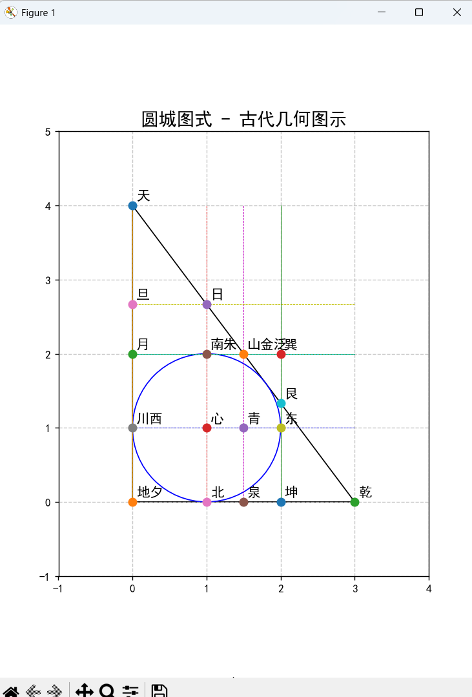
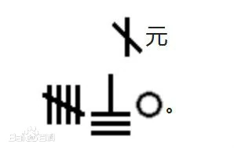
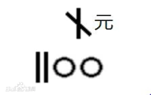
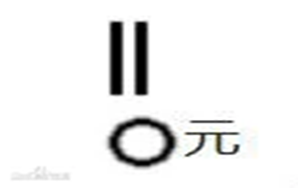
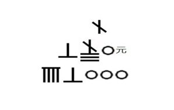

李冶（1192年—1279年） - 金元时期数学家

核心成就
- 📜 数学著作：著有《测圆海镜》，系统阐述天元术
- 📊 天元术：发展并完善了天元术，为代数学奠定基础
- 🌾 几何研究：深入研究几何学，特别是圆的性质
- 📚 教育贡献：致力于数学教育，培养了大批数学人才
- 🌱 实用数学：强调数学在实际生活中的应用
1192年
李冶出生
1248年
著《测圆海镜》
1259年
完成《益古演段》
1279年
逝世

圆城图式是中国古代数学家李冶为阐述勾股容方、勾股容圆图形中的数量关系而设计的几何图形，载于《测圆海镜》卷首，可能源于“洞渊九容术”，是《九章算术》“勾股”问题在宋元时期发展的结果。
问题：假令圆城一所，不知周径，四面开门，门外纵横各有十字大道。其西北十字道头定为乾地，其东北十字道头定为艮地，其东南十字道头定为巽地，其西南十字道头定为坤地。或问出西门南行四百八十步有树，出北门东行二百步见之, 问径几里?

内减天元半径得股圆差：480-x

又置乙东行步在地，内减天元，得勾圆差：200-x

以勾圆差增乘股圆差得半段黄方幂：x²-680x+96000

又置天元幂以倍之，也为半段黄方幂；

因此，得x²-680x+96000=2x²
相消得：
-x²-680x+96000=0
解之得：x=120或x=-800
故，径为120